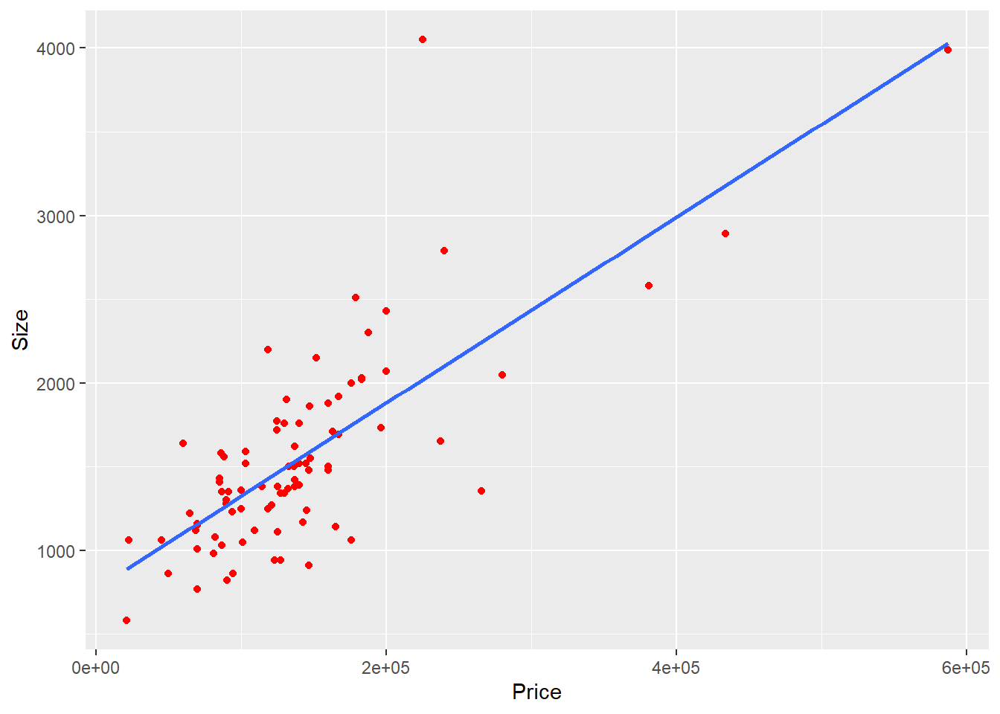

Code
library(tidyverse)
library(AER)
library(stargazer)
knitr::opts_chunk$set(echo = TRUE)Ken Docekal
November 14, 2022
The predicted selling price is 107296 which makes the residual 37704. This means that our model’s estimated sale price of $107296, for a house size of 1240 square feet and lot size of 18000 square feet, is off from the actual observed price by $37704.
With fixed lot size each square-foot increase in home size increases price by $53.80. This is because the variable’s coefficient is 53.8 and will therefore only increase by this amount if no factors other than home size are considered by the model.
If we fix home size, lot size need to increase by 18.94 feet to have the equivalent impact as a one square foot increase in home size.
Loading required package: effectslattice theme set by effectsTheme()
See ?effectsTheme for details. degree rank sex year ysdeg
Masters:34 Asst :18 Male :38 Min. : 0.000 Min. : 1.00
PhD :18 Assoc:14 Female:14 1st Qu.: 3.000 1st Qu.: 6.75
Prof :20 Median : 7.000 Median :15.50
Mean : 7.481 Mean :16.12
3rd Qu.:11.000 3rd Qu.:23.25
Max. :25.000 Max. :35.00
salary
Min. :15000
1st Qu.:18247
Median :23719
Mean :23798
3rd Qu.:27258
Max. :38045 # A tibble: 52 × 6
degree rank sex year ysdeg salary
<fct> <fct> <fct> <int> <int> <int>
1 Masters Prof Male 25 35 36350
2 Masters Prof Male 13 22 35350
3 Masters Prof Male 10 23 28200
4 Masters Prof Female 7 27 26775
5 PhD Prof Male 19 30 33696
6 Masters Prof Male 16 21 28516
7 PhD Prof Female 0 32 24900
8 Masters Prof Male 16 18 31909
9 PhD Prof Male 13 30 31850
10 PhD Prof Male 13 31 32850
# … with 42 more rows
Call:
lm(formula = salary ~ sex, data = salary)
Residuals:
Min 1Q Median 3Q Max
-8602.8 -4296.6 -100.8 3513.1 16687.9
Coefficients:
Estimate Std. Error t value Pr(>|t|)
(Intercept) 24697 938 26.330 <2e-16 ***
sexFemale -3340 1808 -1.847 0.0706 .
---
Signif. codes: 0 '***' 0.001 '**' 0.01 '*' 0.05 '.' 0.1 ' ' 1
Residual standard error: 5782 on 50 degrees of freedom
Multiple R-squared: 0.0639, Adjusted R-squared: 0.04518
F-statistic: 3.413 on 1 and 50 DF, p-value: 0.0706Findings indicate a negative relationship of $3340 for females however this result is not significant at the 95% confidence level and the model has low predictive ability as adjusted R-squared is only .05. This is confirmed as p-value is the same because there is only one explanatory variable.
t test of coefficients:
Estimate Std. Error t value Pr(>|t|)
(Intercept) 24696.79 921.74 26.7938 < 2e-16 ***
sexFemale -3339.65 1860.15 -1.7954 0.07864 .
---
Signif. codes: 0 '***' 0.001 '**' 0.01 '*' 0.05 '.' 0.1 ' ' 1 2.5 % 97.5 %
(Intercept) 14134.4059 17357.68946
sexFemale -697.8183 3030.56452
degreePhD -663.2482 3440.47485
rankAssoc 2985.4107 7599.31080
rankProf 8396.1546 13841.37340
year 285.1433 667.47476
ysdeg -280.6397 31.4910595% confidence interval for sex controlling for other variables:
-697.81 to 3030.564
Call:
lm(formula = salary ~ sex + degree + rank + year + ysdeg, data = salary)
Residuals:
Min 1Q Median 3Q Max
-4045.2 -1094.7 -361.5 813.2 9193.1
Coefficients:
Estimate Std. Error t value Pr(>|t|)
(Intercept) 15746.05 800.18 19.678 < 2e-16 ***
sexFemale 1166.37 925.57 1.260 0.214
degreePhD 1388.61 1018.75 1.363 0.180
rankAssoc 5292.36 1145.40 4.621 3.22e-05 ***
rankProf 11118.76 1351.77 8.225 1.62e-10 ***
year 476.31 94.91 5.018 8.65e-06 ***
ysdeg -124.57 77.49 -1.608 0.115
---
Signif. codes: 0 '***' 0.001 '**' 0.01 '*' 0.05 '.' 0.1 ' ' 1
Residual standard error: 2398 on 45 degrees of freedom
Multiple R-squared: 0.855, Adjusted R-squared: 0.8357
F-statistic: 44.24 on 6 and 45 DF, p-value: < 2.2e-16sex The p-value of 0.214 indicates the effect of sex is insignificant at the 95% confidence interval; with all other variables held equal the coefficient indicates an increase of $1166.37 in salary for female sex with a positive slope.
degreePhD The p-value of 0.18 indicates the effect of a PhD degree is insignificant at the 95% confidence interval; with all other variables held equal the coefficient indicates an increase of $1388.61 in salary for PhD holders compared to Masters degree holders with a positive slope.
rank Rank values are in relation to the baseline of rankAsst. The p-values of both rankAssoc and rankProf are low enough to indicate significance at the 95% confidence interval; with all other variables held equal the coefficients indicate positive slopes with a salary increase of $5292.36 and $11,118.76 for Associate and Full Professors respectively compared to Assistant Professor salary.
year The p-value of less than .05 indicates the effect of years in current rank is significant at the 95% confidence interval; with all other variables held equal the coefficient indicates a positive slope with an increase of $476.31 in salary per increase in year.
ysdeg The p-value of 0.115 indicates the effect of ysdeg is insignificant at the 95% confidence interval; with all other variables held equal the coefficient indicates an decrease of $124.57 in salary per year since highest degree with a negative slope.
Call:
lm(formula = salary ~ sex + degree + rank + year + ysdeg, data = salary)
Residuals:
Min 1Q Median 3Q Max
-4045.2 -1094.7 -361.5 813.2 9193.1
Coefficients:
Estimate Std. Error t value Pr(>|t|)
(Intercept) 21038.41 1109.12 18.969 < 2e-16 ***
sexFemale 1166.37 925.57 1.260 0.214
degreePhD 1388.61 1018.75 1.363 0.180
rankAsst -5292.36 1145.40 -4.621 3.22e-05 ***
rankProf 5826.40 1012.93 5.752 7.28e-07 ***
year 476.31 94.91 5.018 8.65e-06 ***
ysdeg -124.57 77.49 -1.608 0.115
---
Signif. codes: 0 '***' 0.001 '**' 0.01 '*' 0.05 '.' 0.1 ' ' 1
Residual standard error: 2398 on 45 degrees of freedom
Multiple R-squared: 0.855, Adjusted R-squared: 0.8357
F-statistic: 44.24 on 6 and 45 DF, p-value: < 2.2e-16When rank’s baseline is changed to Assc we are able to see the values for rankAsst. The coefficient of -5292.36 indicates a negative relationship with p-value indicating significance at the 95% confidence interval.
Call:
lm(formula = salary ~ sex + degree + rank + year + ysdeg, data = salary)
Residuals:
Min 1Q Median 3Q Max
-4045.2 -1094.7 -361.5 813.2 9193.1
Coefficients:
Estimate Std. Error t value Pr(>|t|)
(Intercept) 26864.81 1375.29 19.534 < 2e-16 ***
sexFemale 1166.37 925.57 1.260 0.214
degreePhD 1388.61 1018.75 1.363 0.180
rankAssoc -5826.40 1012.93 -5.752 7.28e-07 ***
rankAsst -11118.76 1351.77 -8.225 1.62e-10 ***
year 476.31 94.91 5.018 8.65e-06 ***
ysdeg -124.57 77.49 -1.608 0.115
---
Signif. codes: 0 '***' 0.001 '**' 0.01 '*' 0.05 '.' 0.1 ' ' 1
Residual standard error: 2398 on 45 degrees of freedom
Multiple R-squared: 0.855, Adjusted R-squared: 0.8357
F-statistic: 44.24 on 6 and 45 DF, p-value: < 2.2e-16When we change the baseline to Prof the model tells us that with other variables equal professor with rank Asst would receive $11,118.76 less salary and a professor with rank Assoc would receive $5826.40 less salary. Both these results are significant at the 95% confidence interval.
Rank would be a biased estimator?? multicollinear?
Call:
lm(formula = salary ~ sex + degree + year + ysdeg, data = salary)
Residuals:
Min 1Q Median 3Q Max
-8146.9 -2186.9 -491.5 2279.1 11186.6
Coefficients:
Estimate Std. Error t value Pr(>|t|)
(Intercept) 17183.57 1147.94 14.969 < 2e-16 ***
sexFemale -1286.54 1313.09 -0.980 0.332209
degreePhD -3299.35 1302.52 -2.533 0.014704 *
year 351.97 142.48 2.470 0.017185 *
ysdeg 339.40 80.62 4.210 0.000114 ***
---
Signif. codes: 0 '***' 0.001 '**' 0.01 '*' 0.05 '.' 0.1 ' ' 1
Residual standard error: 3744 on 47 degrees of freedom
Multiple R-squared: 0.6312, Adjusted R-squared: 0.5998
F-statistic: 20.11 on 4 and 47 DF, p-value: 1.048e-09Comparing the rank excluded model with a non-excluded model we can see that rank is not multicollinear as each rank variable outcome is significant according to its individual p-value and adjusted R-squared decreases when rank is removed from the model. The rank-included model has relatively greater predictive power.
We can turn ysdeg into a dummy variable dean with 1 if hired after the dean, 0 if hired before the dean.
# A tibble: 52 × 7
degree rank sex year ysdeg salary dean
<fct> <fct> <fct> <int> <int> <int> <dbl>
1 Masters Prof Male 25 35 36350 0
2 Masters Prof Male 13 22 35350 0
3 Masters Prof Male 10 23 28200 0
4 Masters Prof Female 7 27 26775 0
5 PhD Prof Male 19 30 33696 0
6 Masters Prof Male 16 21 28516 0
7 PhD Prof Female 0 32 24900 0
8 Masters Prof Male 16 18 31909 0
9 PhD Prof Male 13 30 31850 0
10 PhD Prof Male 13 31 32850 0
# … with 42 more rowsMulticollinearity check:
Call:
lm(formula = salary ~ sex + degree + year + rank + ysdeg + dean,
data = salary)
Residuals:
Min 1Q Median 3Q Max
-3621.2 -1336.8 -271.6 530.1 9247.6
Coefficients:
Estimate Std. Error t value Pr(>|t|)
(Intercept) 25179.14 1901.59 13.241 < 2e-16 ***
sexFemale 1084.09 921.49 1.176 0.246
degreePhD 1135.00 1031.16 1.101 0.277
year 460.35 95.09 4.841 1.63e-05 ***
rankAssoc -6177.44 1043.04 -5.923 4.39e-07 ***
rankAsst -11411.45 1362.02 -8.378 1.16e-10 ***
ysdeg -47.86 97.71 -0.490 0.627
dean 1749.09 1372.83 1.274 0.209
---
Signif. codes: 0 '***' 0.001 '**' 0.01 '*' 0.05 '.' 0.1 ' ' 1
Residual standard error: 2382 on 44 degrees of freedom
Multiple R-squared: 0.8602, Adjusted R-squared: 0.838
F-statistic: 38.68 on 7 and 44 DF, p-value: < 2.2e-16
Call:
lm(formula = salary ~ sex + degree + rank + dean, data = salary)
Residuals:
Min 1Q Median 3Q Max
-6187.5 -1750.9 -438.9 1719.5 9362.9
Coefficients:
Estimate Std. Error t value Pr(>|t|)
(Intercept) 29511.3 784.0 37.640 < 2e-16 ***
sexFemale -829.2 997.6 -0.831 0.410
degreePhD 1126.2 1018.4 1.106 0.275
rankAssoc -7100.4 1297.0 -5.474 1.76e-06 ***
rankAsst -11925.7 1512.4 -7.885 4.37e-10 ***
dean 319.0 1303.8 0.245 0.808
---
Signif. codes: 0 '***' 0.001 '**' 0.01 '*' 0.05 '.' 0.1 ' ' 1
Residual standard error: 3023 on 46 degrees of freedom
Multiple R-squared: 0.7645, Adjusted R-squared: 0.7389
F-statistic: 29.87 on 5 and 46 DF, p-value: 2.192e-13Selected model excluding ysdeg:
Call:
lm(formula = salary ~ sex + degree + year + rank + dean, data = salary)
Residuals:
Min 1Q Median 3Q Max
-3403.3 -1387.0 -167.0 528.2 9233.8
Coefficients:
Estimate Std. Error t value Pr(>|t|)
(Intercept) 24425.32 1107.52 22.054 < 2e-16 ***
sexFemale 907.14 840.54 1.079 0.2862
degreePhD 818.93 797.48 1.027 0.3100
year 434.85 78.89 5.512 1.65e-06 ***
rankAssoc -6124.28 1028.58 -5.954 3.65e-07 ***
rankAsst -11096.95 1191.00 -9.317 4.54e-12 ***
dean 2163.46 1072.04 2.018 0.0496 *
---
Signif. codes: 0 '***' 0.001 '**' 0.01 '*' 0.05 '.' 0.1 ' ' 1
Residual standard error: 2362 on 45 degrees of freedom
Multiple R-squared: 0.8594, Adjusted R-squared: 0.8407
F-statistic: 45.86 on 6 and 45 DF, p-value: < 2.2e-16The new variable dummy dean is derived from ysdeg so we exclude ysdeg from the model. Controlling for all other variables, dean’s coefficient of 2163.46 represents a positive relationship between dean hiring and salary however this relationship is not statistically significant. Based on the selected model we are not able to reject the null hypothesis that people hired by the new Dean are making a higher salary at the 95% confidence level due to the p-value of .05.
case Taxes Beds Baths New
Min. : 1.00 Min. : 20 Min. :2 Min. :1.00 Min. :0.00
1st Qu.: 25.75 1st Qu.:1178 1st Qu.:3 1st Qu.:2.00 1st Qu.:0.00
Median : 50.50 Median :1614 Median :3 Median :2.00 Median :0.00
Mean : 50.50 Mean :1908 Mean :3 Mean :1.96 Mean :0.11
3rd Qu.: 75.25 3rd Qu.:2238 3rd Qu.:3 3rd Qu.:2.00 3rd Qu.:0.00
Max. :100.00 Max. :6627 Max. :5 Max. :4.00 Max. :1.00
Price Size
Min. : 21000 Min. : 580
1st Qu.: 93225 1st Qu.:1215
Median :132600 Median :1474
Mean :155331 Mean :1629
3rd Qu.:169625 3rd Qu.:1865
Max. :587000 Max. :4050 # A tibble: 100 × 7
case Taxes Beds Baths New Price Size
<int> <int> <int> <int> <int> <int> <int>
1 1 3104 4 2 0 279900 2048
2 2 1173 2 1 0 146500 912
3 3 3076 4 2 0 237700 1654
4 4 1608 3 2 0 200000 2068
5 5 1454 3 3 0 159900 1477
6 6 2997 3 2 1 499900 3153
7 7 4054 3 2 0 265500 1355
8 8 3002 3 2 1 289900 2075
9 9 6627 5 4 0 587000 3990
10 10 320 3 2 0 70000 1160
# … with 90 more rows
Call:
lm(formula = Price ~ Size + New, data = house.selling.price)
Residuals:
Min 1Q Median 3Q Max
-205102 -34374 -5778 18929 163866
Coefficients:
Estimate Std. Error t value Pr(>|t|)
(Intercept) -40230.867 14696.140 -2.738 0.00737 **
Size 116.132 8.795 13.204 < 2e-16 ***
New 57736.283 18653.041 3.095 0.00257 **
---
Signif. codes: 0 '***' 0.001 '**' 0.01 '*' 0.05 '.' 0.1 ' ' 1
Residual standard error: 53880 on 97 degrees of freedom
Multiple R-squared: 0.7226, Adjusted R-squared: 0.7169
F-statistic: 126.3 on 2 and 97 DF, p-value: < 2.2e-16The model prediciting home selling price in terms of size and newness is statistically significant overall and accounts for .72 of observed prices. Individually, both Size and New variables are significant at the 95% confidence interval; the Size coefficient indicates an of $116.13 per additional square feet while the New coefficient indicates new homes sell for $57,736.28 more than old homes.
Looking only at new homes, the mean selling price for new homes is predicted to be $290964.
Min. 1st Qu. Median Mean 3rd Qu. Max.
98870 184542 251916 290964 386247 556178 Looking only at non-new homes, the mean selling price for non-new homes is predicted to be $138,567.
The predicted selling price for a new home of 3000 square feet is $366,016.30
The predicted selling price for a non-new home of 3000 square feet is $308,163.90
The model with an interaction term between size and new indicates overall model significance at the 95% confidence interval due to the low model p-value. With other variables held equal however, the variable New is no longer statistically significant.
Call:
lm(formula = Price ~ Size + New + Size * New, data = house.selling.price)
Residuals:
Min 1Q Median 3Q Max
-175748 -28979 -6260 14693 192519
Coefficients:
Estimate Std. Error t value Pr(>|t|)
(Intercept) -22227.808 15521.110 -1.432 0.15536
Size 104.438 9.424 11.082 < 2e-16 ***
New -78527.502 51007.642 -1.540 0.12697
Size:New 61.916 21.686 2.855 0.00527 **
---
Signif. codes: 0 '***' 0.001 '**' 0.01 '*' 0.05 '.' 0.1 ' ' 1
Residual standard error: 52000 on 96 degrees of freedom
Multiple R-squared: 0.7443, Adjusted R-squared: 0.7363
F-statistic: 93.15 on 3 and 96 DF, p-value: < 2.2e-16The regression line for homes hat are new and not new show the same positive linear relationship and a very similar slope. This indicates that the degree of newness’ effect on selling price is similar for new and not new homes.
`geom_smooth()` using formula = 'y ~ x'
The predicted selling price with Size*New
The predicted selling price for a new home of 3000 square feet is $398,473.90.
The predicted selling price for a non-new home of 3000 square feet is $291,087.40.
1
148942.5 1
134429.8 As house size increase the difference in selling price also increases as for a home of 1500 square feet the different between new and non-new is predicted to be $14,512.70, compared to a difference of $107,386.50 for a 3000 square foot home.
Call:
lm(formula = Price ~ Size + New, data = house.selling.price)
Residuals:
Min 1Q Median 3Q Max
-205102 -34374 -5778 18929 163866
Coefficients:
Estimate Std. Error t value Pr(>|t|)
(Intercept) -40230.867 14696.140 -2.738 0.00737 **
Size 116.132 8.795 13.204 < 2e-16 ***
New 57736.283 18653.041 3.095 0.00257 **
---
Signif. codes: 0 '***' 0.001 '**' 0.01 '*' 0.05 '.' 0.1 ' ' 1
Residual standard error: 53880 on 97 degrees of freedom
Multiple R-squared: 0.7226, Adjusted R-squared: 0.7169
F-statistic: 126.3 on 2 and 97 DF, p-value: < 2.2e-16
Call:
lm(formula = Price ~ Size + New + Size * New, data = house.selling.price)
Residuals:
Min 1Q Median 3Q Max
-175748 -28979 -6260 14693 192519
Coefficients:
Estimate Std. Error t value Pr(>|t|)
(Intercept) -22227.808 15521.110 -1.432 0.15536
Size 104.438 9.424 11.082 < 2e-16 ***
New -78527.502 51007.642 -1.540 0.12697
Size:New 61.916 21.686 2.855 0.00527 **
---
Signif. codes: 0 '***' 0.001 '**' 0.01 '*' 0.05 '.' 0.1 ' ' 1
Residual standard error: 52000 on 96 degrees of freedom
Multiple R-squared: 0.7443, Adjusted R-squared: 0.7363
F-statistic: 93.15 on 3 and 96 DF, p-value: < 2.2e-16The model with the interaction term is preferable compared to without the interaction term as the adjusted R-squared value is higher while both models are statistically significant indicating that model is more representative of the relationship of Size and New to Price.
---
title: "HW4"
author: "Ken Docekal"
desription: "Homework 4"
date: "11/14/2022"
format:
html:
toc: true
code-fold: true
code-copy: true
code-tools: true
categories:
- hw4
- Ken Docekal
---
```{r}
#| label: setup
#| warning: false
library(tidyverse)
library(AER)
library(stargazer)
knitr::opts_chunk$set(echo = TRUE)
```
## Q1
# A
```{r}
a <- 1240
b <- 18000
c <- -10536 + 53.8*a + 2.84*b
c
```
```{r}
145000 - 107296
```
The predicted selling price is 107296 which makes the residual 37704. This means that our model's estimated sale price of $107296, for a house size of 1240 square feet and lot size of 18000 square feet, is off from the actual observed price by $37704.
# B
With fixed lot size each square-foot increase in home size increases price by $53.80. This is because the variable's coefficient is 53.8 and will therefore only increase by this amount if no factors other than home size are considered by the model.
# C
```{r}
53.8/ 2.84
```
If we fix home size, lot size need to increase by 18.94 feet to have the equivalent impact as a one square foot increase in home size.
## Q2
```{r}
library(alr4)
data('salary', package = 'alr4')
```
```{r}
summary(salary)
tibble(salary)
```
# A
```{r}
lm(salary ~ sex, data = salary) |> summary()
```
Findings indicate a negative relationship of $3340 for females however this result is not significant at the 95% confidence level and the model has low predictive ability as adjusted R-squared is only .05. This is confirmed as p-value is the same because there is only one explanatory variable.
```{r}
model <- lm(salary ~ sex, data = salary)
coeftest(model, vcov. = vcovHC, type = "HC1")
```
```{r}
model <- lm(salary ~ sex, data = salary)
confint(model)
```
# B
```{r}
model <- lm(salary ~ sex + degree + rank + year + ysdeg, data = salary)
confint(model)
```
95% confidence interval for sex controlling for other variables:
-697.81 to 3030.564
# C
```{r}
lm(salary ~ sex + degree + rank + year + ysdeg, data = salary) |> summary()
```
sex
The p-value of 0.214 indicates the effect of sex is insignificant at the 95% confidence interval; with all other variables held equal the coefficient indicates an increase of $1166.37 in salary for female sex with a positive slope.
degreePhD
The p-value of 0.18 indicates the effect of a PhD degree is insignificant at the 95% confidence interval; with all other variables held equal the coefficient indicates an increase of $1388.61 in salary for PhD holders compared to Masters degree holders with a positive slope.
rank
Rank values are in relation to the baseline of rankAsst. The p-values of both rankAssoc and rankProf are low enough to indicate significance at the 95% confidence interval; with all other variables held equal the coefficients indicate positive slopes with a salary increase of $5292.36 and $11,118.76 for Associate and Full Professors respectively compared to Assistant Professor salary.
year
The p-value of less than .05 indicates the effect of years in current rank is significant at the 95% confidence interval; with all other variables held equal the coefficient indicates a positive slope with an increase of $476.31 in salary per increase in year.
ysdeg
The p-value of 0.115 indicates the effect of ysdeg is insignificant at the 95% confidence interval; with all other variables held equal the coefficient indicates an decrease of $124.57 in salary per year since highest degree with a negative slope.
# D
```{r}
salary$rank <- relevel(salary$rank, ref = "Assoc")
summary(lm(salary ~ sex + degree + rank + year + ysdeg, data = salary))
```
When rank's baseline is changed to Assc we are able to see the values for rankAsst. The coefficient of -5292.36 indicates a negative relationship with p-value indicating significance at the 95% confidence interval.
```{r}
salary$rank <- relevel(salary$rank, ref = "Prof")
summary(lm(salary ~ sex + degree + rank + year + ysdeg, data = salary))
```
When we change the baseline to Prof the model tells us that with other variables equal professor with rank Asst would receive $11,118.76 less salary and a professor with rank Assoc would receive $5826.40 less salary. Both these results are significant at the 95% confidence interval.
# E
Rank would be a biased estimator?? multicollinear?
```{r}
lm(salary ~ sex + degree + year + ysdeg, data = salary) |> summary()
```
Comparing the rank excluded model with a non-excluded model we can see that rank is not multicollinear as each rank variable outcome is significant according to its individual p-value and adjusted R-squared decreases when rank is removed from the model. The rank-included model has relatively greater predictive power.
# F
We can turn ysdeg into a dummy variable dean with 1 if hired after the dean, 0 if hired before the dean.
```{r}
salary$dean <- ifelse(salary$ysdeg <=15, 1, 0)
tibble(salary)
```
Multicollinearity check:
```{r}
cor(salary$ysdeg, salary$year)
```
```{r}
cor(salary$ysdeg, salary$dean)
```
```{r}
cor(salary$year, salary$dean)
```
```{r}
lm(salary ~ sex + degree + year + rank + ysdeg + dean, data = salary) |> summary()
```
```{r}
lm(salary ~ sex + degree + rank + dean, data = salary) |> summary()
```
Selected model excluding ysdeg:
```{r}
lm(salary ~ sex + degree + year + rank + dean, data = salary) |> summary()
```
The new variable dummy dean is derived from ysdeg so we exclude ysdeg from the model. Controlling for all other variables, dean's coefficient of 2163.46 represents a positive relationship between dean hiring and salary however this relationship is not statistically significant. Based on the selected model we are not able to reject the null hypothesis that people hired by the new Dean are making a higher salary at the 95% confidence level due to the p-value of .05.
## Q3
```{r}
library(smss)
data('house.selling.price', package = 'smss')
```
```{r}
summary(house.selling.price)
tibble(house.selling.price)
```
# A
```{r}
lm(Price ~ Size + New, data = house.selling.price) |> summary()
```
The model prediciting home selling price in terms of size and newness is statistically significant overall and accounts for .72 of observed prices. Individually, both Size and New variables are significant at the 95% confidence interval; the Size coefficient indicates an of $116.13 per additional square feet while the New coefficient indicates new homes sell for $57,736.28 more than old homes.
# B
Looking only at new homes, the mean selling price for new homes is predicted to be $290964.
```{r}
prediction1 <- predict(lm(Price ~ Size + New, data = subset(house.selling.price, New=="1")))
summary(prediction1)
```
Looking only at non-new homes, the mean selling price for non-new homes is predicted to be $138,567.
```{r}
prediction0 <- predict(lm(Price ~ Size + New, data = subset(house.selling.price, New=="0")))
summary(prediction0)
```
# C
```{r}
n <- lm(Price ~ Size + New, data = house.selling.price)
```
The predicted selling price for a new home of 3000 square feet is $366,016.30
```{r}
predict(n, data.frame(Size = 3000) + (New = 1))
```
The predicted selling price for a non-new home of 3000 square feet is $308,163.90
```{r}
predict(n, data.frame(Size = 3000) + (New = 0))
```
# D
The model with an interaction term between size and new indicates overall model significance at the 95% confidence interval due to the low model p-value. With other variables held equal however, the variable New is no longer statistically significant.
```{r}
lm(Price ~ Size + New + Size*New, data = house.selling.price) |> summary()
```
# E
The regression line for homes hat are new and not new show the same positive linear relationship and a very similar slope. This indicates that the degree of newness' effect on selling price is similar for new and not new homes.
```{r}
new0 <- subset(house.selling.price, New=="0")
ggplot(new0, aes(y=Size, x=Price)) +
geom_point(colour = "red") +
geom_smooth(method = "lm", se=FALSE)
```
```{r}
new1 <- subset(house.selling.price, New=="1")
ggplot(new1, aes(y=Size, x=Price)) +
geom_point(colour = "blue") +
geom_smooth(method = "lm", se=FALSE)
```
# F
The predicted selling price with Size*New
```{r}
nI <- lm(Price ~ Size + New + Size*New, data = house.selling.price)
```
The predicted selling price for a new home of 3000 square feet is $398,473.90.
```{r}
predict(nI, data.frame(Size = 3000) + (New = 1))
```
The predicted selling price for a non-new home of 3000 square feet is $291,087.40.
```{r}
predict(nI, data.frame(Size = 3000) + (New = 0))
```
# G
```{r}
predict(nI, data.frame(Size = 1500) + (New = 1))
predict(nI, data.frame(Size = 1500) + (New = 0))
```
As house size increase the difference in selling price also increases as for a home of 1500 square feet the different between new and non-new is predicted to be $14,512.70, compared to a difference of $107,386.50 for a 3000 square foot home.
# H
```{r}
lm(Price ~ Size + New, data = house.selling.price) |> summary()
lm(Price ~ Size + New + Size*New, data = house.selling.price) |> summary()
```
The model with the interaction term is preferable compared to without the interaction term as the adjusted R-squared value is higher while both models are statistically significant indicating that model is more representative of the relationship of Size and New to Price.